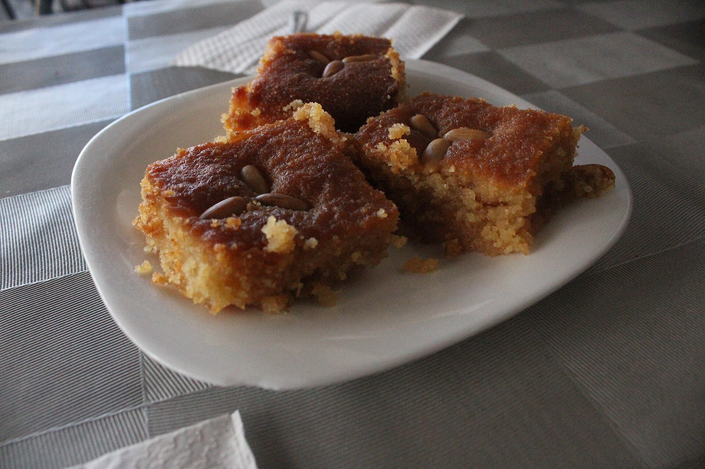

Home Page
Greek Honey Cake
by Jan O'Leary Merzlak

Greek
Honey Cake recipe by Jan O'Leary Merzlak on allrecipes.com
This Greek honey cake recipe yields a very moist cake, often found at Greek food festivals.
Ingredients
- 1 cup honey
- 1 3/4 cups white sugar, divided
- 1 teaspoon lemon juice
- 1 cup all-purpose flour
- 1 1/2 teaspoons baking powder
- 1 teasoon grated orange zest
- 1/2 teaspoon gound cinnamon
- 1/4 teaspoon salt
- 3/4 cup unsalted butter
- 3 eggs
- 1/4 cup milk
- 1 cup chopped walnuts
Recipe
- Combine honey, 1 cup sugar, and water in a saucepan; bring to a simmer and cook 5 minutes. Stir in
lemon juice; bring to a boil and cook for 2 minutes. Remove from heat and let cool while you prepare
the cake.
- Preheat the oven to 350 degrees F (175 degrees C). Grease and flour a 9-inch square baking pan.
- Combine flour, baking powder, orange zest, cinnamon, and salt in a bowl; set aside.
- Beat remaining 3/4 cup sugar and butter together in a large bowl until light and fluffy. Beat in eggs,
one at a time. Beat in flour mixture, alternating with milk, beating just until incorporated; stir in
walnuts. Pour batter into the prepared pan.
- Bake in the preheated oven until a toothpick inserted into center comes out clean, about 40 minutes.
- Remove cake from oven and poke holes over the surface with a toothpick. Slowly ladle the cooled honey
syrup over cake. For best results, set cake aside for 4 to 6 hours to cool and absorb the syrup before
slicing and serving.